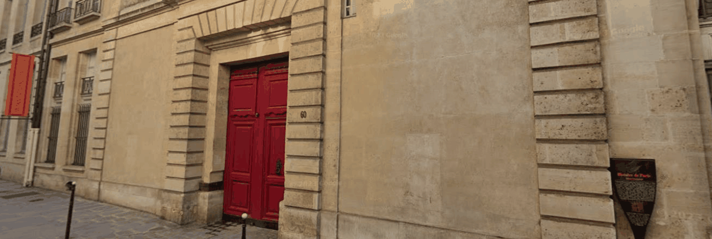

Entrance to Club de la Chasse at 60 Rue des Archives.
Main venue for talks
Club de la Chasse
The talks will take place at the Club de la Chasse, located at 60 Rue des Archives, 75003 Paris, an 8-minute walk from the Rice Global Paris Center. The entrance to the Club is through the red door (see the picture). If the door is closed, simply use the bell. There is a permanently staffed security desk at the entrance. On the first day of the event you are attending, you will be met at the entrance and directed to the auditorium.